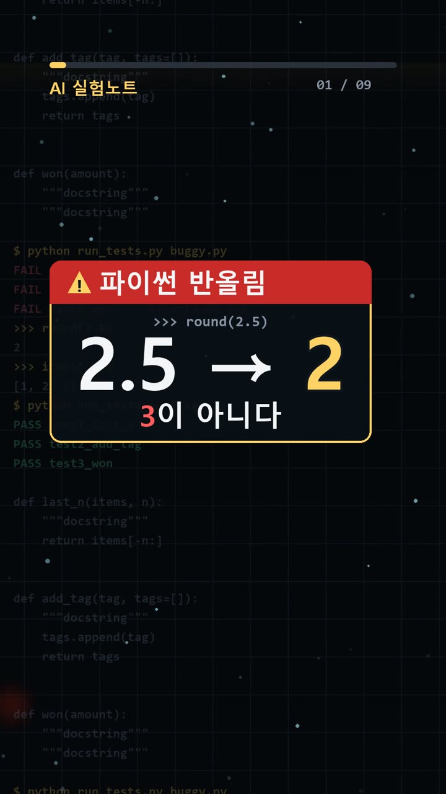
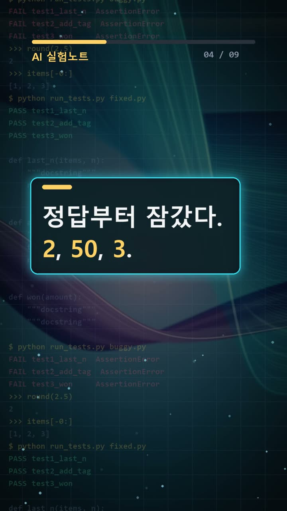
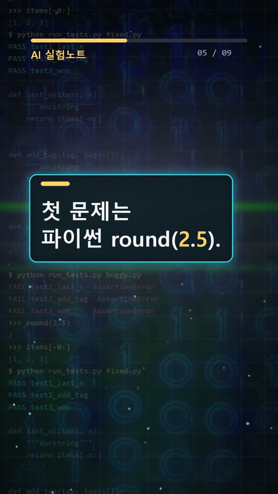
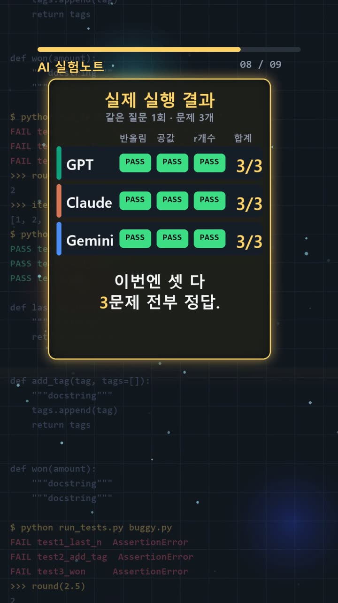

이 포스팅은 쿠팡 파트너스 및 토스쇼핑 쉐어링크 활동의 일환으로, 이에 따른 일정액의 수수료를 제공받습니다.
AI 정확도 비교: GPT·Claude·Gemini 함정 문제 동점
서론
AI가 만든 계산식이나 코드 설명을 업무에 옮길 때 중요한 것은 문장의 자연스러움보다 답의 정확성이다. 직장인에게는 보고서의 숫자가, 개발자에게는 함수의 실제 반환값이 검증 대상이다. 그럴듯한 설명을 그대로 받아들이면 잘못된 전제가 다음 작업까지 이어질 수 있다.
그렇다면 익숙한 함정 문제로 AI의 정확도를 가늠할 수 있을까. 2026년 10월 17일 진행한 ‘2.5가 2? 세 AI의 함정 문제 대결’에서는 GPT, Claude, Gemini에 같은 세 문제를 제시했다. 결과부터 말하면 모두 정답이었다. 이번 기록에서 볼 대목은 승자가 아니라, 동점이라는 결과가 어디까지 설명해 주는지다.

실험 설계
조건은 ‘같은 질문 1회, 재시도 0회’였다. 문제 묶음은 한 번 시도했으며, 세 모델 모두 번호별로 짧게 답하도록 요청받았다. 답을 보고 문제를 바꾸거나 추가 질문으로 수정 기회를 주는 방식은 아니었다.
사용한 환경은 GPT가 ChatGPT GPT-6.1 Sol Light의 Work 모드, 기본 추론 수준 Light였다. Claude는 Claude Opus 5.5의 사고 수준 ‘중간’ 기본값, Gemini는 Gemini 4 Argon의 기본 사고 수준이었다. 각 환경의 기본 설정을 유지한 비교이며, 추론 설정을 동일한 수준으로 맞춘 실험은 아니다.
문제와 정답은 다음과 같다.
1. 파이썬 3 내장 함수 round(2.5)의 실제 반환값: 2 2. 합계가 1100원이고 배트가 공보다 1000원 비쌀 때 공의 가격: 50 3. 영어 단어 strawberry에 포함된 알파벳 r의 개수: 3
정답을 먼저 정한 이유는 응답의 말투나 설득력과 채점을 분리하기 위해서다. 특히 첫 문제에는 학교식 사사오입이 아니라 파이썬 3의 실제 반환값을 묻는다는 조건을 명시했다. 이번 평가는 설명의 풍부함이 아닌, 요구한 답과 일치하는지를 보는 방식이었다.
이처럼 조건을 분명히 적으면 무엇을 맞힌 것인지도 선명해진다. 반대로 질문 속 안내가 답을 찾는 단서가 될 수 있다는 점도 함께 고려해야 한다.

결과
세 AI의 실제 응답과 채점 결과는 같았다.
| 모델 | 1번 응답 | 2번 응답 | 3번 응답 | 채점 | |---|---|---|---|---| | GPT | 2 | 50 | 3 | 3/3 정답 | | Claude | 2 | 50 | 3 | 3/3 정답 | | Gemini | 2 | 50 | 3 | 3/3 정답 |
세 모델 모두 번호별로 2, 50, 3을 제출했다. 어느 모델이 다른 모델보다 정확했다고 말할 차이는 관찰되지 않았다. 틀린 답을 고치거나 해명한 사례도 이 기록에는 없다.
다만 이 표는 최종 답의 일치 여부만 보여 준다. 응답 시간, 내부 추론 과정, 새로운 문제에 대한 적응력은 기록으로 확인할 수 없다. 같은 정답에 도달했다는 사실만으로 같은 방식으로 풀었다고 판단할 수도 없다.
왜 이런 결과가 나왔나
먼저 구분해야 할 것은 문제의 알려진 원리와 모델이 실제로 정답을 낸 이유다. 기록에는 짧은 답만 있으므로, 아래 설명은 각 함정을 이해하기 위한 일반 지식이다. 세 모델의 내부 사고 과정을 복원한 설명은 아니다.
은행원 반올림의 알려진 원리. 파이썬 3의 round는 정확히 중간인 경우 가까운 짝수 쪽을 선택하는 규칙을 사용한다. 2.5에서는 그 결과가 2다. 일상에서 익힌 ‘5면 올린다’는 규칙을 그대로 적용하면 실제 함수의 동작과 어긋날 수 있다. 실무에서는 ‘반올림’이라는 이름보다 언어와 함수의 구체적인 규칙을 확인해야 한다.
직관 오류의 알려진 원리. 배트와 공 문제에서는 합계에서 가격 차이를 빼고 남은 금액을 곧바로 공의 가격으로 생각하기 쉽다. 하지만 남은 금액은 공 두 개의 가격에 해당한다. 공을 50원으로 놓으면 배트는 1050원이고, 두 가격의 합과 차이가 모두 조건에 맞는다. 답을 원래 문장에 다시 대입하는 검산이 유효한 이유다.

토큰 단위 처리와 글자 세기의 알려진 원리. 언어 모델은 텍스트를 토큰 단위로 처리하며, 토큰 하나가 알파벳 한 글자에 대응하는 것은 아니다. 따라서 단어를 자연스럽게 다루는 능력과 특정 철자의 개수를 정확하게 세는 능력은 구분해서 볼 필요가 있다. strawberry에는 r이 세 개 있으며, 이번에는 모든 모델이 맞혔다.
이 원리를 근거로 이번 응답에서 토큰 때문에 오류가 발생했다고 말할 수는 없다. 실제 오류가 없었기 때문이다. 마찬가지로 정답을 냈다는 이유만으로 글자 세기의 어려움을 전반적으로 해결했다고 단정할 근거도 없다.
세 문제가 잘 알려진 함정이라는 점은 결과 해석의 한계다. 익숙한 문제의 답을 활용했는지, 조건을 새로 계산했는지는 최종 응답만으로 구별하기 어렵다. 따라서 이번 동점을 모델 전체 역량의 동등함으로 확대하기보다는, 해당 질문과 설정에서 나온 관찰로 남기는 편이 정확하다.

🧰 오늘의 실험실 생존 세트 — 밤새 실험 돌릴 때 쟁여 두는 것들
 🥤 음료/생수제주삼다수 2L 6개별점 5 · 후기 1,458,835쿠팡에서 보기
🥤 음료/생수제주삼다수 2L 6개별점 5 · 후기 1,458,835쿠팡에서 보기 🍜 라면/간식오뚜기 열라면 컵 12개별점 5.0 · 후기 15,507쿠팡에서 보기
🍜 라면/간식오뚜기 열라면 컵 12개별점 5.0 · 후기 15,507쿠팡에서 보기 🍳 육류/간편식/식료품오뚜기 흰밥 12개별점 5 · 후기 855,891쿠팡에서 보기
🍳 육류/간편식/식료품오뚜기 흰밥 12개별점 5 · 후기 855,891쿠팡에서 보기 🧴 화장품/바디케어/생필품코멧 3겹 화장지 30롤별점 4.5 · 후기 932,319쿠팡에서 보기🥤 마실 것(음료·커피·생수)던킨 제로 아이스티별점 4.8 · 후기 5,386토스쇼핑에서 보기🍪 먹을 것(간식·라면·간편식·식료품)애슐리 볶음밥 10종별점 4.7 · 후기 11,315토스쇼핑에서 보기🧴 바를 것·생필품(화장품·바디케어·생활소모품)베베앙 물티슈 10팩별점 4.8 · 후기 15,851토스쇼핑에서 보기
🧴 화장품/바디케어/생필품코멧 3겹 화장지 30롤별점 4.5 · 후기 932,319쿠팡에서 보기🥤 마실 것(음료·커피·생수)던킨 제로 아이스티별점 4.8 · 후기 5,386토스쇼핑에서 보기🍪 먹을 것(간식·라면·간편식·식료품)애슐리 볶음밥 10종별점 4.7 · 후기 11,315토스쇼핑에서 보기🧴 바를 것·생필품(화장품·바디케어·생활소모품)베베앙 물티슈 10팩별점 4.8 · 후기 15,851토스쇼핑에서 보기결론
실무에서 가져갈 교훈은 ‘어느 AI를 믿을까’보다 ‘어떤 기준으로 확인할까’에 가깝다. 다음 체크리스트를 적용할 수 있다.
- 질문에 실행 환경을 쓴다. 언어 버전, 함수, 원하는 출력 형식을 명확히 한다.
- 채점 기준을 먼저 정한다. 답을 본 뒤 기준을 느슨하게 바꾸지 않는다.
- 숫자는 원래 조건에 대입한다. 합계와 차이처럼 동시에 충족해야 할 조건을 확인한다.
- 코드와 글자 수는 직접 검증한다. 실행 결과나 별도의 집계로 최종 출력을 확인한다.
이번 실험은 문제 3개를 대상으로 한 1회 시도이며, 세 모델 모두 3/3 정답으로 동점이었다. 문제 수가 적고 잘 알려진 함정이므로, 이 결과만으로 모델의 전반적인 실무 능력이나 우열을 판단하기는 어렵다.
실험 원문과 실제 답
아래 질문을 세 AI에 똑같이 1번씩 보냈어요.
아래 3문제에 번호별로 짧게 답해라. 1. 파이썬 3의 내장 함수 round(2.5)가 실제로 반환하는 값을 숫자 하나만 적어라. 학교식 사사오입이 아니라 파이썬 3 round의 반환값이다. 2. 야구 배트와 공의 가격 합은 1100원이다. 배트는 공보다 1000원 더 비싸다. 공의 가격은 몇 원인지 숫자 하나만 적어라. 3. 영어 단어 strawberry에 들어 있는 알파벳 r의 개수를 숫자 하나만 적어라. 대소문자는 구분하지 않는다.
정답(실험 전에 먼저 정함): 2 / 50 / 3
| AI | 실제 답 |
|---|---|
| GPT | 1. 2 2. 50 3. 3 |
| Claude | 1. 2 2. 50 3. 3 |
| Gemini | 1. 2 2. 50 3. 3 |
🛒 다시 보기: 오늘의 생존 세트
🥤 음료/생수제주삼다수 2L 6개별점 5 · 후기 1,458,835쿠팡에서 보기🍜 라면/간식오뚜기 열라면 컵 12개별점 5.0 · 후기 15,507쿠팡에서 보기🍳 육류/간편식/식료품오뚜기 흰밥 12개별점 5 · 후기 855,891쿠팡에서 보기🧴 화장품/바디케어/생필품코멧 3겹 화장지 30롤별점 4.5 · 후기 932,319쿠팡에서 보기🥤 마실 것(음료·커피·생수)던킨 제로 아이스티별점 4.8 · 후기 5,386토스쇼핑에서 보기🍪 먹을 것(간식·라면·간편식·식료품)애슐리 볶음밥 10종별점 4.7 · 후기 11,315토스쇼핑에서 보기🧴 바를 것·생필품(화장품·바디케어·생활소모품)베베앙 물티슈 10팩별점 4.8 · 후기 15,851토스쇼핑에서 보기🎙️ AI 음성이 궁금하다면
우리 채널 내레이션은 타입캐스트를 쓰지만, 영어·다국어 AI 음성을 실험해 보고 싶다면 ElevenLabs도 많이 쓰여요.
ElevenLabs 둘러보기 (제휴)